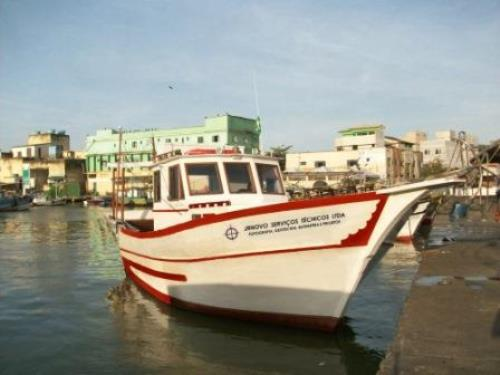
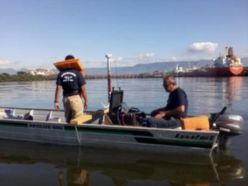
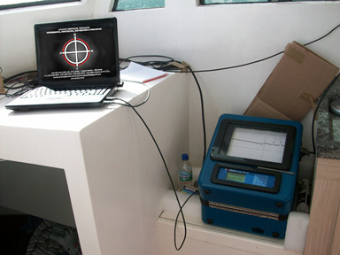
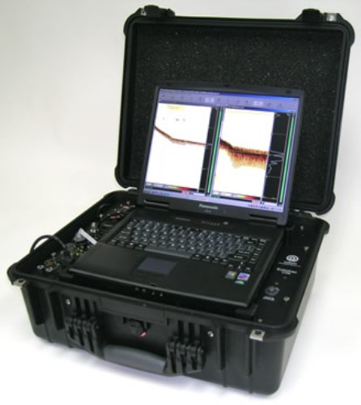
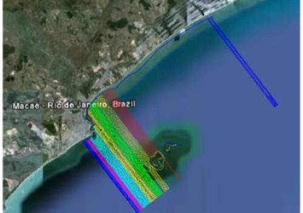
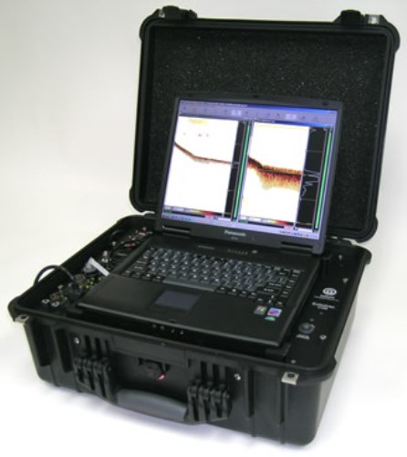
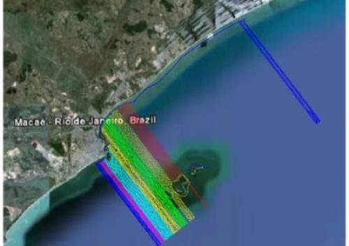
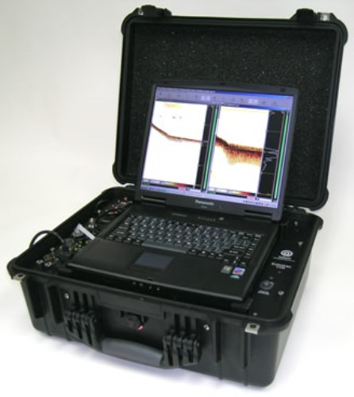
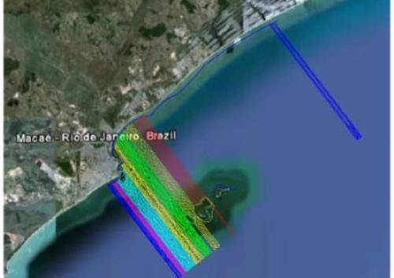

Batimetria
Segundo o dicionario, batimetria é a "Ciência do Mensuramento da profundidade das massas de água (oceanos, ares, lagos, etc) para determinação da topografia do seu leito," ou ainda "o ato de determinar esse relevo".
Para nós da JR Novo, a batimetria é a arte de fonecer aos nossos clientes todas as informações necessarias para o seu atendimento, em mar, rio, canal, lagoa, reservatorios, barragens, lagoas de areação e/ou decantação, para qualquer tipo de finalidade, por exemplo:
- calculo de volume
- controle de assoreamento
- medição de profundidade
- mapeamento de leito
- controle de assoreamento
- Detecção de erosão submersa
- Estudo e acompanhemto de dragagem
- Cálculo de volume
- Instalação de dutos submersos
- Medição de Correntes
- Locação de Boias demarcatorias
- Sinalização





 




